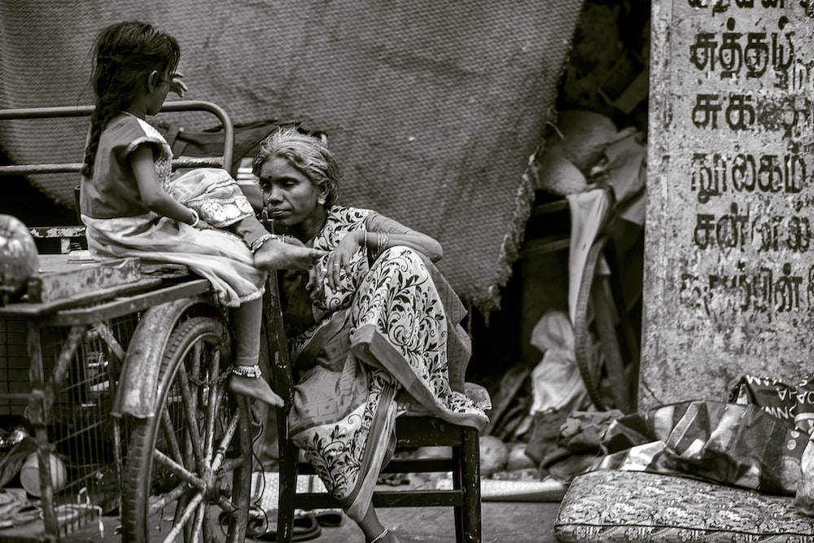

“There are people in the world so hungry that God cannot appear to them except in the form of bread.” — Mahatma Gandhi, Indian political and spiritual leader.
India is a country under development. Even if the economy is expanding, poverty is still a significant problem. However, India is seeing a drop in poverty. In India, extreme poverty, which the World Bank defines as having an annual income of US$1.9 or less in purchasing power parity (PPP) terms, reached as low as 0.8% in 2019, and the nation was able to maintain that level in 2020 despite the extraordinary COVID-19 epidemic. Extreme poverty decreased by 12.3% between 2011 and 2019, from 22.5% in 2011 to 10.2% in 2019, according to the World Bank.
Agricultural poverty decreased from 26.3% in 2011 to 11.6% in 2019, according to a working paper from the bank. In the same time frame, the decline in urban regions went from 14.2% to 6.3%. Both rural and urban areas saw decreases in poverty of 14.7 and 7.9 percentage points, respectively. Achim Steiner, the administrator of the United Nations Development Programme, claims that India helped 271 million people escape extreme poverty in the ten years between 2005–2006 and 2015–2016.